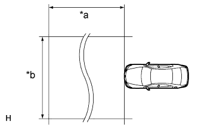
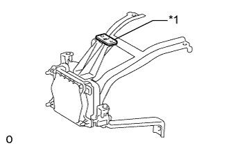
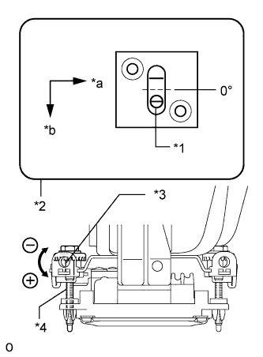
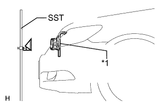
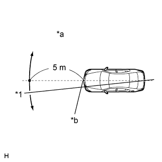
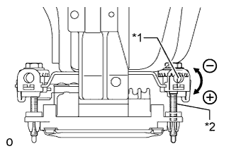

MILLIMETER WAVE RADAR SENSOR > ADJUSTMENT |
| 1. ADJUST MILLIMETER WAVE RADAR SENSOR ASSEMBLY |
|  |
| *a | Approx. 10 m (32.8 ft.) |
| *b | Approx. 14 m (45.9 ft.) |
Before adjusting the radar beam axis, prepare the vehicle as follows.
Check the tire pressure and adjust it if necessary.
Remove all excess weight from the vehicle (luggage, heavy objects, etc.).
Check and adjust the vertical direction of the radar sensor.
|  |
Remove dust, oil and foreign matter from the level rack of the radar sensor.
| *1 | Level |
Set the special level on the level rack of the radar sensor.
|  |
Check that the level's air bubble is within the red frame.
| *1 | Air Bubble |
| *2 | Level |
| *3 | Screwdriver Insertion Hole |
| *4 | Bolt A |
| *a | LH |
| *b | FR |
| Adjustment Direction | Adjustment Procedure | Adjustment Angle (Reference) |
| Vertical adjustment | Upward direction: Turn bolt A to positive (+) side | For every rotation of screwdriver, sensor moves approximately 0.12° |
| Downward direction: Turn bolt A to negative (-) side |
|  |
Adjust the reflector height.
| *1 | Millimeter Wave Radar Sensor Assembly |
Adjust the reflector so that the center of SST reflector is the same height as the millimeter wave radar sensor.
|  |
Place the reflector.
| *1 | String |
| *a | Adjust Center by Moving String to Right and Left |
| *b | Extend String Through Front Center Mark |
Hang the string with weight from the center of the vehicle's rear emblem. Mark the center point of the rear of the vehicle on the ground. Repeat for the front of the vehicle.
Secure one end of the string to the center point of the rear of the vehicle. Run the string over the center point of the rear of the vehicle to a position 5 m (16.4 ft.) beyond the center point of the rear of the vehicle as shown in the illustration. Mark the 5 m (16.4 ft.) position.
Place the reflector (SST) at the marked position.
| *a | Reflector Placement Point | *b | Millimeter Wave Radar Sensor Position |
Check the radar beam axis.
Connect the intelligent tester to the DLC3.
Turn the engine switch on (IG).
Turn the intelligent tester on and turn the cruise control main switch on.
Select "Powertrain" from the display screen.*1
Select "Radar Cruise" from the display screen.
Select "Utility" from the display screen.
Select "Beam Axis Adjustment" from the display screen.
Follow the intelligent tester display and select "Next".
Check the following items on the radar cruise divergence data screen.
Check and adjust the horizontal direction of the radar sensor.
Check that the divergence of the radar beam axis is 0°.
|  |
Using a screwdriver, turn and adjust bolt B for horizontal adjustment of the millimeter wave radar sensor based on the measured divergence of the beam axis.
| *1 | Screwdriver Insertion Hole |
| *2 | Bolt B |
| Adjustment Direction | Adjustment Procedure | Adjustment Angle (Reference) |
| Horizontal adjustment | Right direction: Turn bolt B to positive (+) side | For every rotation of screwdriver, sensor moves approximately 0.07° |
| Left direction: Turn bolt B to negative (-) side |
Select "Next". The driving learning value is automatically reset.
Disconnect the intelligent tester from the DLC3.
Recheck and readjust the vertical direction of the radar sensor.
Set the special level on the level rack of the radar sensor.
| *1 | Level |
Check that the level's air bubble is within the red frame.
| *1 | Air Bubble |
| *2 | Level |
| *3 | Screwdriver Insertion Hole |
| *4 | Bolt A |
| *a | LH |
| *b | FR |
| Adjustment Direction | Adjustment Procedure | Adjustment Angle (Reference) |
| Vertical adjustment | Upward direction: Turn bolt A to positive (+) side | For every rotation of screwdriver, sensor moves approximately 0.12 ° |
| Downward direction: Turn bolt A to negative (-) side |